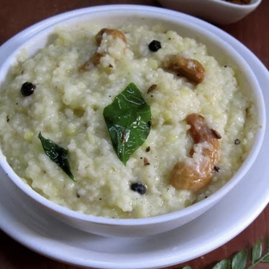

Ingredients:
- 1/2 cup raw rice
- 1/4 cup moong dal (split yellow lentils)
- 2 cups water
- 1 tbsp ghee
- 1/2 tsp black pepper (whole or crushed)
- 1/2 tsp cumin seeds
- 1 tbsp cashews
- 1-inch ginger (finely chopped)
- Few curry leaves
- A pinch of hing (asafoetida)
- Salt to taste

Instructions:
Cook rice & dal:
Wash and pressure cook rice & moong dal with water for 3-4 whistles until soft and mushy.Mash & adjust consistency
Open the cooker, mash slightly, and add more hot water if needed for a creamy texture. Prepare tempering
Heat ghee in a pan, add cumin, pepper, cashews, chopped ginger, curry leaves, and hing. Sauté until cashews turn golden.Mix & combine
Pour this tempering over the cooked rice-dal mixture, add salt, and mix well